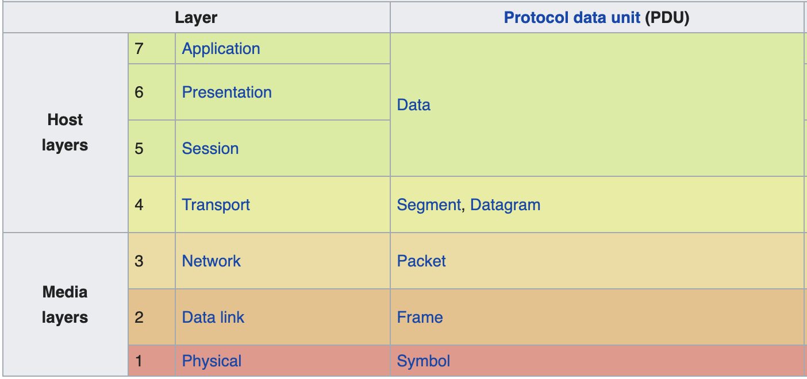

Networking 101 #
Summary of network relevant topics regarding computers.
General Topics #
- A protocol stack is the collection of protocols (given protocol for each layer) that is used by a given system.
- A network architecture is the collection of layers and protocols.
- In networking you have also the concept of a sender sending more than a receiver can handle (like back pressure with streams). In networking this is often named flow controll.
- In networking you have often 2 types of delivery
- datagram: Just a stream of data, no need for guarantee of delivery (eg. a stream, video streaming). Usually have a concept of a “connection”.
- confirmed datagram: Sent distinct parts, guaranteed delivery. Usually don’t talk about a “connection”.
- OSI model was created before protocols, TCP/Ip after protocols. That’s why it stuck more and had no “flaws” for new use cases.
Introduction OSI model #
-
OSI: Open Systems Interconnection Model
- Standardizes communication functions of telecommunication/computer systems with standard communication protocols.
- Original model defines 7 abstraction layers.
- A layer servers the layer above and served by the layer below.
- ISO standard
- Each level has a PDU, Protocol Data Unit (e.g. Data, Package, Segment, Frame, …)
- A PDU has a payload (Service Data Unit, SDU) + protocol related header and footer.
- Some protocols might define “sublayers” for the benefit of the protocol design.
- Just a model, nothing in the real world adhere’s to it.
-
Communication protocols enable an entity in one host to interact with corresponding entity at the same layer in another host.
-
Some layers allow variable length of data, but lower layers might have to adhere to fixed length. These layers will split the data into smaller parts.
-
The 7 Layers
- Layer 1: Physical - Transmission of raw data between devices over a medium. Converts bits to electric/radio or optical signals.
- Layer 2: Data Link - Node to node transfer. Detects/corrects errors in physical layer. Defines protocol to establish and terminate connections between physical devices + flow control. (e.g. 802.11 Wi-Fi)
- Layer 3: Network - Functional and procedural means of transferring variable length packets from one node to another in different networks. At this point there is a concept of “address” for each node and a packet can be “routed”. At this point the packet does not travel perse between 2 devices that are physically directly connected. More details later.
- Layer 4: Transport - Functional and procedural means of transferring variable length packets from source to destination while maintaining QoS functions. This is end-to-end at this point. You talk with the target device, not an in between node.
- Layer 5: Session - Controls (establish, manage and terminate) connections between computers. Provides full-duplex, half-duplex and simplex operation. RPCs usually live on this layer.
- Layer 6: Presentation - Establish context between application-layer entities. Translates between network and application formats. So translates data into the format that he application layer accepts. Layer can also include compression functions.
- Layer 7: Application - Layer closest to end user, communicating with the software application.
-
Cross-layer functions: Services not tied to a given layer, may affect multiple layers (e.g. security).
-
Comparison with TCP/IP model:
- Internet Application Layer: Maps to OSI’s Application (#7), Presentation (#6) and Session Layer (#5).
- TCP/IP Transport Layer: Graceful close functions of OSI Session (#5) and Transport layer (#4).
- Internet Layer: OSI Network Layer (#3)
- Link Layer: OSI Data Link Layer (#2) and Phsyical Layer (#1)
- Notice how OSI Session layer relates to Internet Application and Transport layer of TCP/IP.
-
A layer has a “Service” which is the primitives/operations that it exposes to the higher level layer using our given layer, see it as the interface. The protocol is rather the rules for a the same layer but between different machines, the peer layers. (e.g. how is the data structured for given layer)

Introduction TCP/IP Model #
-
The 4 Layers
- Layer 1: Physical - The model does not specify much about this layer. As long it can serve the upper layer.
- Layer 2: Network/Internet - The routing logic from end2end across multiple nodes. Connection-agnostic layer. Defines an official packet format and protocol, named IP (internet protocol).
- Layer 3: Transport - Layer allows peer entities to have conversations with source and target entities.
- 2 end2end protocols available on this level
- TCP (Transmission Control Protocol) - Delivery guarantee, reassembled out of order messages. Also does control flow.
- UDP (User datagram Protocol) - No delivery guarantee, connectionless, stream basically. Also for single request/reply queries. Speed is more important than accuracy.
- 2 end2end protocols available on this level
- Layer 4: Application - Experiende said that abstractions of session/presentation layers were not necessary. Examples are TELNET, FTP, SMTP, HTTP, DNS, NNTP, …)
-
Compared to OSI model
- Layer 1: Physical - Encapsulates “Physical” layer and “Data Link” layer of ISO
- Layer 2: Network/Internet - Same as “Network” layer of ISO
- Layer 3: Transport - Same as “Transport” layer of ISO
- Layer 4: Application - Encapsulates “Session”, “Presentation”, and “Application” layer of ISO